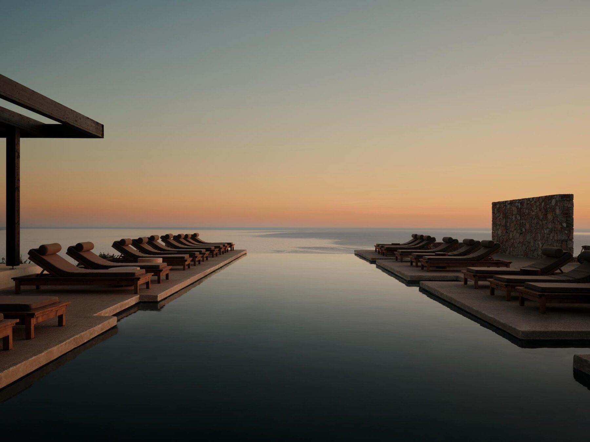
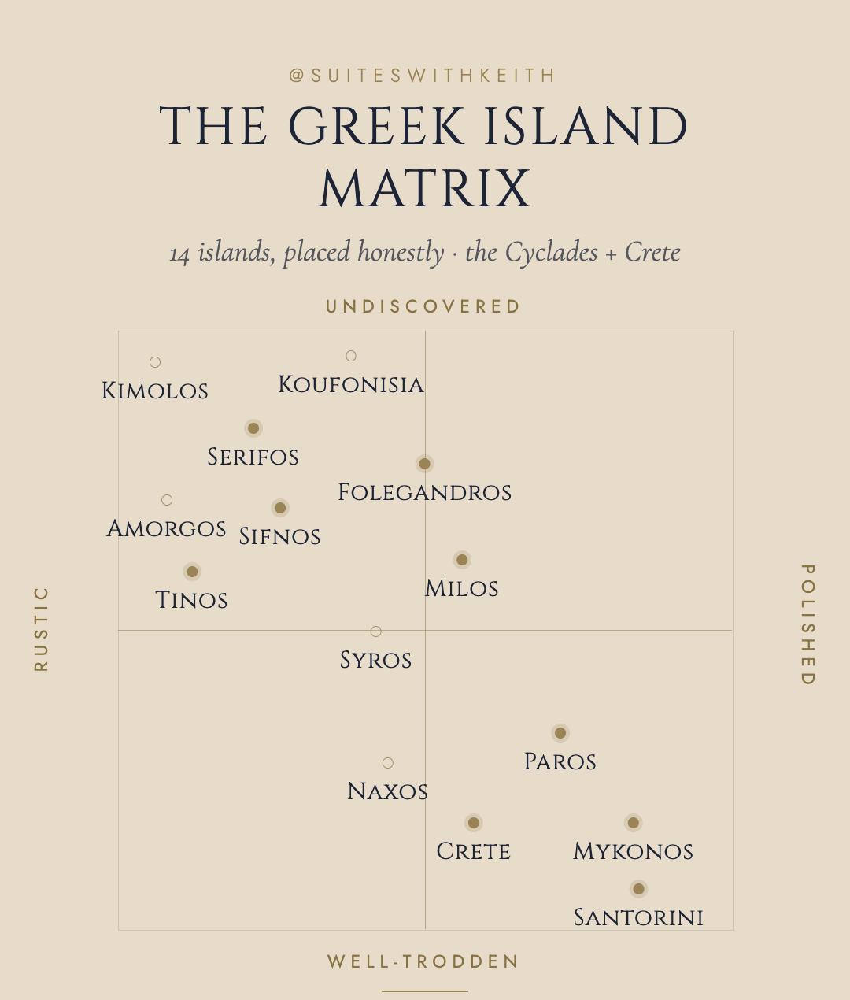
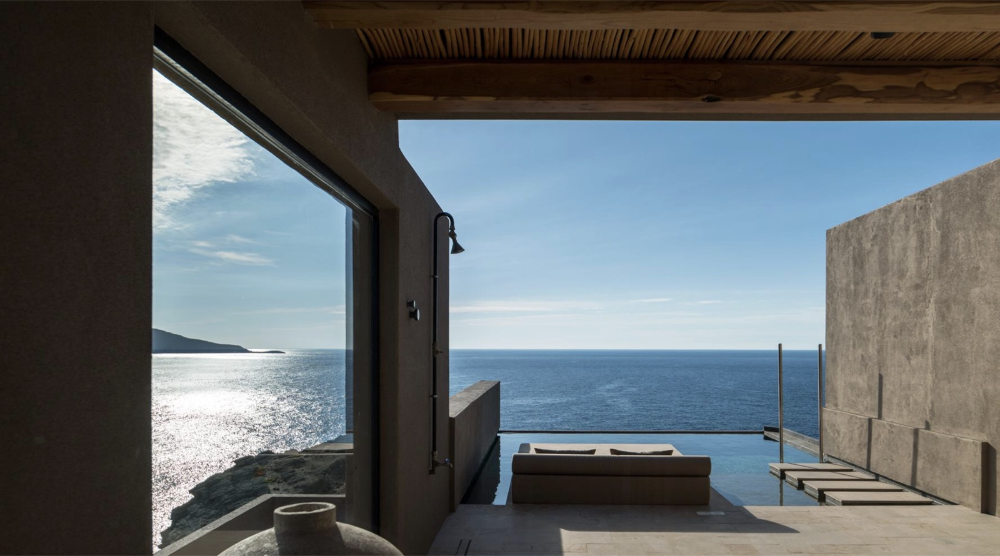
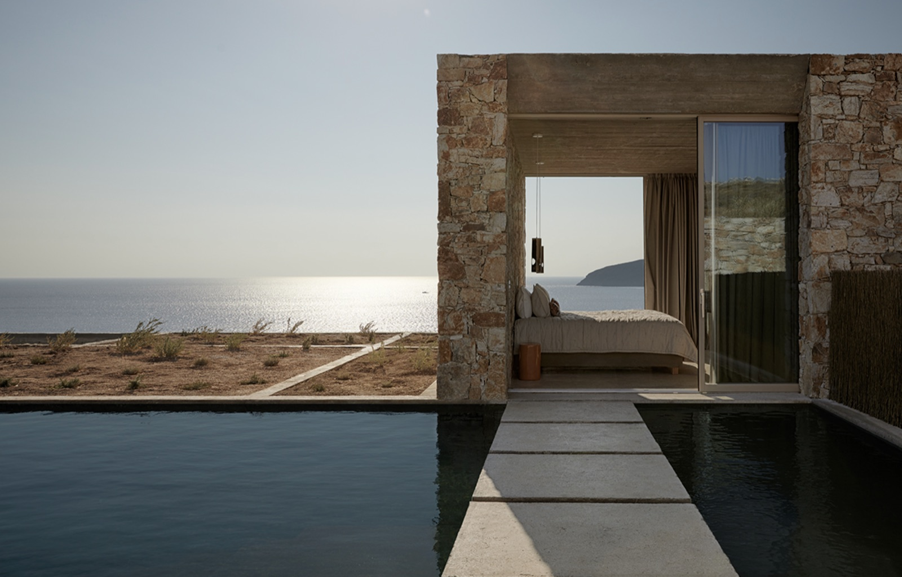
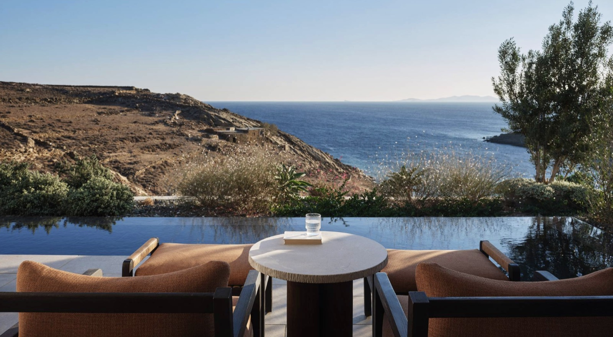

The Greek Island Matrix
Fourteen islands, placed honestly. Twenty-one hotels I'd actually book. No rankings, no hidden gems that turn out to be mobbed.
Every Greek island list I read is a ranking, and rankings are useless when the question is which island suits you. Santorini isn't better than Serifos. They're answers to different questions.
So I built a map instead of a list. Two axes, fourteen islands, each one placed where it actually sits rather than where the marketing puts it. Then the part that matters: the twenty-one hotels I'd put a client in, and who each one is for.
If you came here from the carousel, this is the full version — every hotel, with my notes. If you're planning a honeymoon specifically, I mapped out a fourteen-night route through five of these islands with private transfers instead of ferries.

How to read it
Rustic to polished is about the island's infrastructure and its expectations of you. Rustic doesn't mean rough — it means a taverna instead of a tasting menu, and a rental car instead of a transfer.
Undiscovered to well-trodden is about crowds in August, not about whether travel writers have found it. Sifnos is written about constantly and still feels calm. Santorini is neither.
Where They Actually Sit
The matrix tells you what an island feels like. This tells you where it is — which matters, because a route is only as good as its ferry connections. Everything above the Crete line is the Cyclades; most pairs of neighbours here are under two hours apart by boat.
Not to scale, and not trying to be — the point is who your neighbours are. Dashed lines are the connections I actually use when building routes.
The Polished End
Santorini · Mykonos · Paros · Crete
These four have the hotels, the restaurants, and the crowds. That's not a criticism — sometimes you want a proper concierge and a sommelier. The skill here is choosing the property that gives you the setting without the scrum.
Santorini
Read the full Santorini guide →

Oia at its most composed. The suites are cut into the cliff properly, not decoratively, and the service is the most consistent on the island.
BOOK IT IFyou want the caldera view and you want it done without fuss.
The view everyone came to Santorini for, from a hotel small enough that you're not queuing for a sun lounger.
BOOK IT IFthe photograph is the point and you'd rather not compromise on it.
Not on the caldera, and better for it. Bigger rooms, private pools, an actual garden, and none of the cliff-path traffic.
BOOK IT IFyou're staying a week, or you've seen the caldera before and want to relax this time.
Mykonos

Mykonos with the volume turned down. Low stone buildings, a long infinity pool, and the best sunset on the island from your own terrace.
BOOK IT IFyou want Mykonos design and Mykonos views without Mykonos noise.
Big, calm, and far enough from town that you actually sleep. The beach club is genuinely good rather than a formality.
BOOK IT IFyou're travelling with friends or family and need space more than intimacy.
The one with the private beach at its sister property, and a restaurant that people book flights around.
BOOK IT IFdinner matters as much as the room. Adults only.
Paros

Where I send most people first. Paros has Mykonos's good looks, better food, and about a third of the attitude.
Arched, minimalist, deeply designed — the kind of hotel that photographs well and still works when you're actually living in it. My most-booked on the island.
BOOK IT IFyou want one hotel to be the whole trip's aesthetic.
Sophisticated, walk to Naoussa, excellent dining. Smaller and looser than Parìlio, with a younger room.
BOOK IT IFyou want to be near a town you'll want to eat in every night.
The new one, and the one clients ask me about most. Quiet, spare, and confident enough not to over-decorate.
BOOK IT IFyou like being early to something.
Choosing between the first two comes up constantly, so I wrote it up: Cosme vs Parìlio.
Crete

Crete isn't Cyclades — it's its own island group, and larger than all the Cyclades combined. I include it because it solves a problem the small islands can't: it has enough going on for two weeks without a boat.
Cliff-edge on the north coast, built into the rock. Cave-style suites with private pools and a lot of privacy for the price.
BOOK IT IFyou want Santorini drama at Crete value.
Bungalows on the water in Agios Nikolaos, sculpture scattered through the gardens. Older in the best sense — established, shaded, unhurried.
BOOK IT IFyou want a garden and a sea you can walk into from your room.
Adults only, on its own small peninsula, so the water is on three sides of you.
BOOK IT IFyou want quiet and a swim before breakfast.
The Middle
Milos · Sifnos · Folegandros
This is where I spend most of my own time. Real islands with real hotels — enough infrastructure to be comfortable, not enough to be crowded. If you only trust one recommendation from this page, make it this group.
Milos

Volcanic rock and impossible water. Milos looks like nowhere else in Greece, and it's best seen from a boat.
Seven stone lodges on the cliff and nothing else. No restaurant, no pool, no reception desk to speak of — that's the point.
BOOK IT IFyou want the island, not the hotel. Bring almost nothing.
Dark stone, pale sea, minimal on purpose. The most designed thing on Milos without being cold about it.
BOOK IT IFyou want architecture and silence in the same booking.
Walk to town, quiet by nine. The easy choice on Milos, and easy is underrated.
BOOK IT IFyou don't want to rent a car.
Sifnos

The food island — and it earns the title. Sifnos is where Greek cooking gets taken seriously by people who live there, not by people importing a concept.
Quiet hillside, dining at Bostani, and it sells out early every year.
BOOK IT IFyou're deciding now for next summer. Genuinely — book it now.
New, boutique, and the reason to come this year rather than next.
BOOK IT IFyou want the island's best rooms and don't mind that nobody's heard of it yet.
Small, well-run, and positioned so you can eat your way across the island from one base.
BOOK IT IFthe food is the itinerary.
Folegandros
Read the full Folegandros guide →

Cliff-edge cave suites on the wild side of the island, with a restaurant good enough to justify the trip on its own. This is the exhale at the end of a route.
BOOK IT IFyou want the most dramatic setting in the Cyclades and the fewest people in it.
The Quiet End
Serifos · Tinos
Two islands most people skip, each with exactly one hotel I'd send you to. That's not a shortage — it's the whole character of the place.
Serifos

Low stone, no scene, and a Chora that climbs a hill like something out of a different century. Serifos rewards people who don't need a scene, and Perma is built for exactly them.
BOOK IT IFyour idea of a good day involves a beach nobody else found.
Tinos

Tinos is for eating and walking — dovecotes, marble villages, and some of the best food in the Cyclades outside Sifnos. This is where you sleep in between.
BOOK IT IFyou'd rather explore than lie down.
Islands I Know and Love
Kimolos · Koufonisia · Naxos · Syros · Amorgos
Five islands on the matrix with no hotel pick, and that's an honest answer rather than a gap. Kimolos in particular is one of my favourite places in Greece — a fishing harbour, a handful of tavernas, water you won't believe. There is no hotel there I'd stake my name on, and pretending otherwise would be the fastest way to lose your trust.
What I'd do instead: pair them. Kimolos as a day trip from Milos. Koufonisia by boat from Naxos. Amorgos for a few nights in a well-chosen rental if you're the kind of traveller who wants that. Naxos and Syros both have good hotels — just not ones I'd single out over the twenty-one above.
Who Goes Where
The matrix places the islands; this places you. Most mismatched trips I untangle come down to the same mistake — a couple sent to a family island, or a family sent to a couples' island — so here's the honest sorting.
Honeymoons & couples
Santorini earns its reputation for two or three nights in a caldera suite — Canaves Oia or Andronis — then move on before the crowds wear you down. The rest of the honeymoon belongs in the middle of the matrix: Gundari on Folegandros is the single most romantic setting in the Cyclades, and Skinopi or Erema on Milos give you the kind of privacy resorts advertise and rarely deliver. If you want it fully adults-only, that's Bill & Coo on Mykonos and Minos Palace on Crete. The full route is in the honeymoon guide.
Families
Crete is the easy answer: direct flights, real distances, and hotels with room to spread out — Minos Beach for the walk-into-the-sea bungalows, Acro Suites if the kids are older and you still want drama. In the Cyclades, Paros is the family island that doesn't feel like a compromise — Cosme puts you a stroll from Naoussa's harbour, and Cali on Mykonos is the one polished-end hotel I'd genuinely hand a multi-generation group. Naxos has the best beaches for children in the whole chain; I pair it with Paros rather than base a trip on it. What I don't do is put families on the caldera — cliff paths, steps, and strollers are a bad mix.
Friends & groups
Mykonos is still the best island in Greece for a group that wants restaurants, beach clubs, and a scene — the trick is sleeping somewhere calm, which is exactly what Kalesma and Cali are for. Paros does the same trip at two-thirds the price and half the attitude, with Naoussa as the night out.
Second-timers & the quiet-seeking
If you've done the famous islands and want the Greece you suspected was hiding behind them, this is the group. Sifnos for the food, Tinos for the villages and walking, Serifos for beaches with nobody on them. One hotel each — Stamna or Verina Astra, Odera, Perma — and that scarcity is the point.
Then there are the three hollow rings on the map: Koufonisia, Amorgos, and Kimolos. These are second-timer islands in the purest sense — you go for the place, not the property. Koufonisia has the best swimming water in the Cyclades, Amorgos has the monastery and the hiking, and Kimolos is the fishing-harbour Greece most people think no longer exists. I build them in as day trips or a few well-chosen rental nights rather than hotel stays, and they're often the part of the trip clients talk about most.
How to Book the Best Hotels
Everything above is useless if the room is gone, so here is how the booking side actually works.
Book the small islands first. Gundari, Verina Astra, Skinopi — these are hotels with seven to thirty rooms, and the good categories for June and September are gone by February. Santorini and Mykonos have depth; they're the last pieces you place, not the first.
Book the room category, not the hotel. The gap between a hotel's entry room and the room it's famous for is usually the whole experience — a caldera view at Canaves, a private pool at Epitome, the sunset side at Kalesma. If the budget forces a choice, take the better room at a cheaper hotel over the worst room at a famous one. Every time.
Six to nine months out is the window. For a June or September trip, that means booking in the autumn or over the holidays. Later than that isn't hopeless — but it means building the route around what's left rather than what's right.
Use an advisor — and not only because I am one. I book these properties through direct relationships and programs like Virtuoso, which means the same rate you'd pay booking direct usually comes with an upgrade at check-in, daily breakfast, a property credit, and someone the hotel answers to if anything goes sideways. It costs you nothing; the hotel pays me. The only scenario where booking direct wins is a flash sale with harsh prepayment terms — and I'll tell you when that's the better deal.
Two islands per week is the right pace. Three is possible; four means you spend the trip in transit.
Book Sifnos and Folegandros first — the good rooms there are limited and they go early. Santorini and Mykonos have depth, so they can wait.
Private transfers between islands cost more than ferries but change the trip completely: no 6am port queues, no schedule built around a boat. On a two-week route it's typically $5,000–$7,000 for the difference.
Late May to mid-June and September are the windows. July and August are hot and full; October is a gamble on the weather but the islands are yours.
Common Questions
Which island should I start with if it's my first time?
Paros. It has the best balance of food, beaches, hotels, and ease, and it connects easily to almost everything else on the matrix.
Is Santorini worth it?
Yes, for two or three nights, in the right hotel, outside July and August. The caldera is genuinely one of the great sights in the Mediterranean. The mistake is staying a week.
How many islands in two weeks?
Three, comfortably. Four if the transfers are private and you're willing to move at pace. Five is a specific kind of trip and needs to be built that way from the start.
Do I need to rent a car?
On Milos, Serifos, Tinos, Naxos and Crete, yes. On Folegandros, Sifnos and Santorini you can manage without. On Mykonos and Paros it depends entirely on the hotel.
Can you book these hotels for me?
Yes — that's the job. I have direct relationships with most of the properties on this page, which usually means an upgrade, breakfast, or a credit that isn't available booking direct.
Which one is yours?
Tell me who you're travelling with, when you're going, and what you want out of it. I'll tell you which islands on this matrix fit and which hotel on each one.
Start your inquiryOr join the list for new hotels and openings, or DM me on Instagram.